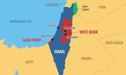

Main Content
The ongoing crisis in Gaza represents one of the most devastating humanitarian catastrophes of our time. Since October 7, the people of Gaza have endured unprecedented levels of violence, displacement, and suffering.
Humanitarian Impact Statistics
According to reports from health authorities and international organizations:
- Over 35,000 Palestinians have been killed, including more than 14,500 children and 9,500 women
- Approximately 79,000 people have been injured, many with life-altering conditions
- Over 1.7 million people have been displaced from their homes
- More than 60% of housing units have been destroyed or severely damaged
- All universities in Gaza have been destroyed or damaged
- Over 70% of schools have been damaged or destroyed
- More than 80% of the population faces emergency or catastrophic levels of food insecurity
The healthcare system in Gaza has collapsed under the weight of attacks and blockade. Major hospitals have been systematically targeted, leaving millions without access to critical medical care. Medical personnel have been killed, detained, or forced to flee, while supplies of medicines, fuel, and equipment have been severely restricted.

Infrastructure destruction has been comprehensive, with entire neighborhoods reduced to rubble. Water and sanitation systems have been destroyed, creating public health crises. The economic cost of reconstruction is estimated to exceed $40 billion, a figure that grows with each day of continued assault.
International organizations have described the situation as a textbook case of genocide, with the International Court of Justice issuing provisional measures ordering Israel to prevent acts of genocide and ensure humanitarian assistance reaches civilians in Gaza. Despite these measures, the violence and restrictions continue.
The international community faces a moral imperative to act decisively to stop the violence, ensure accountability for violations of international law, and establish a path toward justice and lasting peace for all people in the region.